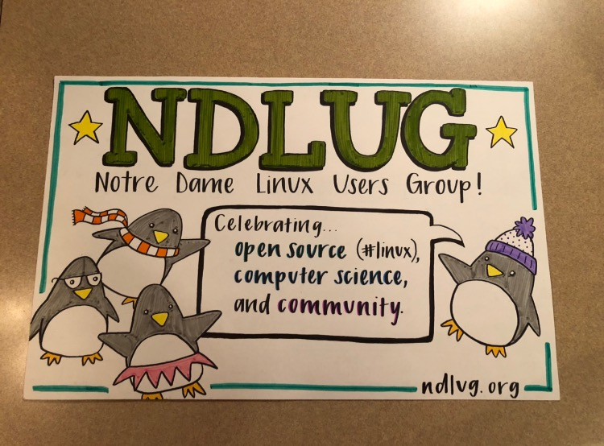
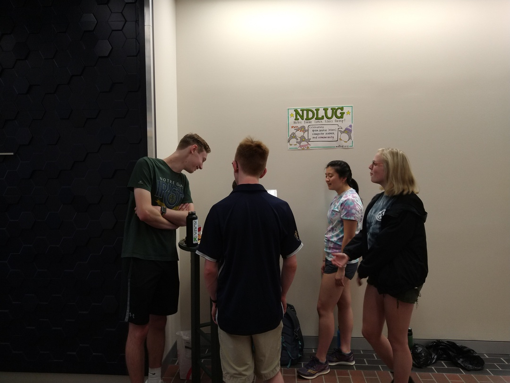
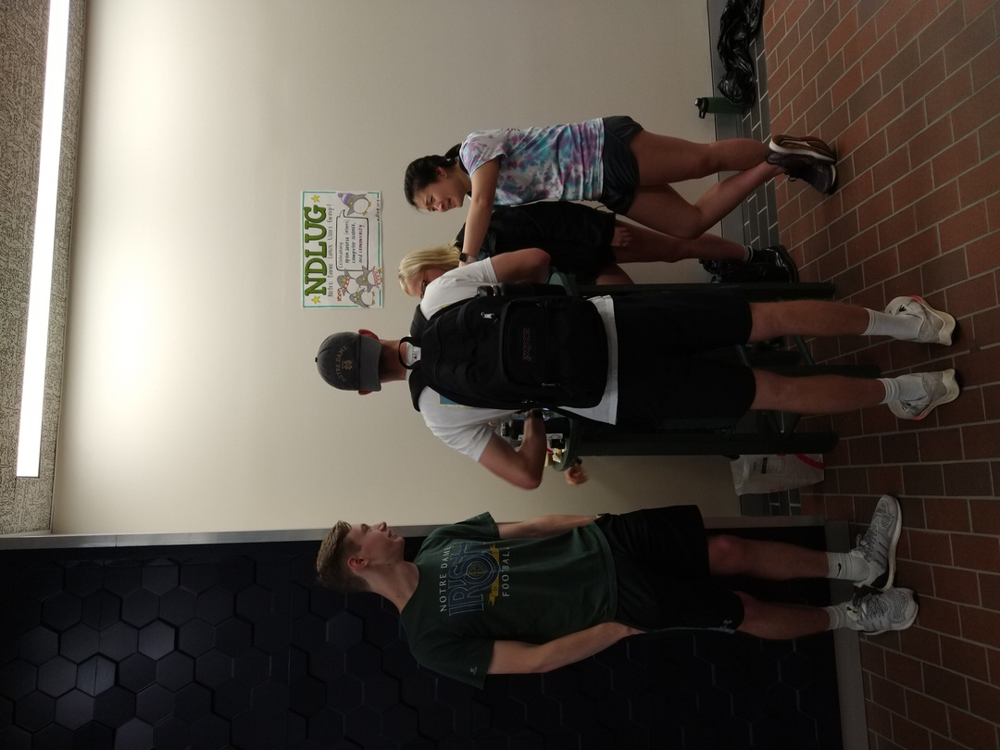

Last weekend, club officers dblitt, alkie, and snie welcomed first year engineering students to Notre Dame and the Linux Users Group! Besides talking about Notre Dame, the officers also discused how NDLUG is focused on celebrating:
Open Source technology and in particular Linux. It is a space for geeking out, flame wars, and of course sharing knowledge.
Computer Science and in particular the CSE department at Notre Dame. Though there are non-CSE majors in the group, the club serves as an unofficial water cooler for department and university ongoings.
Community. The heart of the club, though, is the members and the support and encouragement they provide one another. As with Open Source, what makes NDLUG special is the people and those who contribute and participate in it.
The officers are always happy to welcome new members into this community. If you are interested, please feel free to contact us or even better, join our IRC server!

